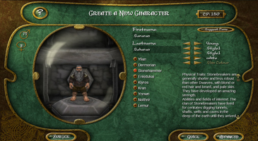
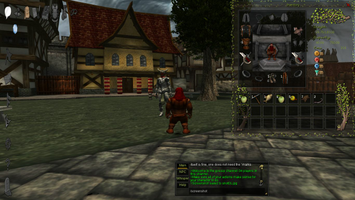

PlaneShift
Dieser Artikel wurde für die folgenden Ubuntu-Versionen getestet:
Ubuntu 16.04 Xenial Xerus
Ubuntu 14.04 Trusty Tahr
Zum Verständnis dieses Artikels sind folgende Seiten hilfreich:
PlaneShift  ist ein freies und kostenlos spielbares MMORPG für verschiedene Betriebssysteme (Windows, Linux in 32- und 64-Bit und Mac OS X). Ursprünglich von Luca 'Talad' Pancallo in einer 2D-Umgebung entwickelt, basiert es seit Version 0.3 ("Crystal Blue"-Ära) auf der 3D-Engine Crystal Space mit OpenGL und OpenAL als Cross-Platform-APIs.
ist ein freies und kostenlos spielbares MMORPG für verschiedene Betriebssysteme (Windows, Linux in 32- und 64-Bit und Mac OS X). Ursprünglich von Luca 'Talad' Pancallo in einer 2D-Umgebung entwickelt, basiert es seit Version 0.3 ("Crystal Blue"-Ära) auf der 3D-Engine Crystal Space mit OpenGL und OpenAL als Cross-Platform-APIs.
PlaneShift befindet sich noch in der Entwicklung, bietet jedoch bereits eine Vielzahl von spielbaren Rassen, Spielwelt-Abschnitten, trainierbaren Fertigkeiten und benutzbaren Gegenständen. Der Fokus liegt auf dem klassischen Rollenspiel in Kombination mit dem Ausbau von Fertigkeiten. Die Hauptsprache dieses Spieles ist Englisch.
Bisher stehen zwei Server zur Verfügung, die voneinander unabhängige Welten mit gleichem Inhalt, aber leicht abweichenden Regeln bieten: Auf dem Rollenspiel-Server ZeroPing ist ein Verhalten "in character" in der öffentlichen Spielewelt Pflicht, auf dem alternativen Server EZPCUSA optional.
Hinweis:
PlaneShift steht unter der GPL (Code) und Atomic Blue Contribution License Agreement (Artwork, Musik, Dialoge, Story, Namen, 3D Modelle, etc.). Genaueres zur Lizenz gibt es hier .
|  |
| Charaktererstellung |
|  |
| Szene aus dem Tutorial |
Installation¶
Zunächst muss das aktuelle Installationspaket herunter geladen werden. Dies kann per Torrent oder Direktdownload erfolgen. Die benötigten Links sind auf der Downloadseite  zu finden. Nach dem Download wechselt man in das Verzeichnis mit dem Installationspaket, macht die heruntergeladene Datei ausführbar[1] und startet [2] die Installationsdatei PlaneShift-v*.run. Anschließend folgt man einfach den Anweisungen des Installers.
zu finden. Nach dem Download wechselt man in das Verzeichnis mit dem Installationspaket, macht die heruntergeladene Datei ausführbar[1] und startet [2] die Installationsdatei PlaneShift-v*.run. Anschließend folgt man einfach den Anweisungen des Installers.
Hinweis:
Obwohl während der Installation die Möglichkeit gegeben wird Startmenüeinträge anzulegen, werden diese nicht angelegt - es sei denn, man startet das Installationsprogramm mit als Root-Rechten [3].
Kompilieren¶
Falls man PlaneShift selbst kompilieren möchte, findet man in der PlaneShift Dokumentation eine Anleitung.
Spielaccount¶
Bevor das Spiel gestartet wird, sollte zuerst ein Account auf einem Spielserver (RP oder NonRP) angelegt werden . Es wird der Namens und eine E-Mail-Adresse benötigt. Nach wenigen Minuten erhält man eine Mail mit einem Aktivierungslink, der weiter zur Wahl des Passwortes führt. Damit ist die Anmeldung abgeschlossen. Die Macher des Spiels weisen ausdrücklich darauf hin , dass der Account und das Spielen kostenlos ist und es keine "Premiumzugänge" gibt.
Konfiguration und Start¶
Das Konfigurations- und Startprogramm pslaunch befindet sich im Installationsverzeichnis und kann direkt dort gestartet [2] werden, sofern man kein Menüeintrag erstellt hat. Sämtliche Einstellungen, Protokolle (Logs) und Bildschirmfotos werden im (versteckten) Ordner ~/.PlaneShift gespeichert.
Bedienung¶
Das Spiel bietet zu Beginn ein Tutorial, in dem die grundlegende Bedienung erklärt wird. Zusätzlich findet sich im Internet eine Anleitung , die aber auf Grund des Entwicklungsstadiums des Spiels teilweise veraltet sein kann.

Infobox¶
| PlaneShift | |
| Genre: | MMORPG |
| Sprache: | , GUI-Elemente teilweise auch auf  oder anderen Sprachen oder anderen Sprachen |
| Veröffentlichung: | 2000 |
| Publisher: | Atomic Blue |
| Systemvoraussetzungen (minimum): | Windows (2000, XP, Vista), Mac OS X 10.4.11, Linux (Kernel 2.6, glibc 2.7), FreeBSD oder Solaris; Grafik: Radeon R200 (8500-9250), GeForce 4 Ti/4200Go series, Intel GMA X3000 (andere Karten können funktionieren, werden aber nicht explizit unterstützt); CPU: 2.4 Ghz Pentium 4 ooder Athlon XP 2600+; 1GB RAM; 1 GB freien Festplattenplatz; 56k Modem Internetverbindung |
| Systemvoraussetzungen (empfohlen): | Windows (XP, Vista, 7), Mac OS X 10.5.8, Linux (Kernel 2.6.27+, glibc 2.9); Grafik: Radeon R420 (X700-X850) oder GeForce FX series; CPU: Intel Pentium D 3.0Ghz oder AMD Athlon 64 3200+; 2 GB RAM; 2 GB freien Festplattenplatz, Breitband Internetverbindung |
| Medien: | Download |
| Läuft mit: | nativ |
- Erstellt mit Inyoka
-
 2004 – 2017 ubuntuusers.de • Einige Rechte vorbehalten
2004 – 2017 ubuntuusers.de • Einige Rechte vorbehalten
Lizenz • Kontakt • Datenschutz • Impressum • Serverstatus -
Serverhousing gespendet von